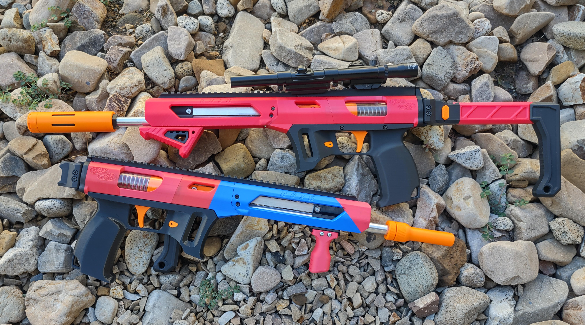
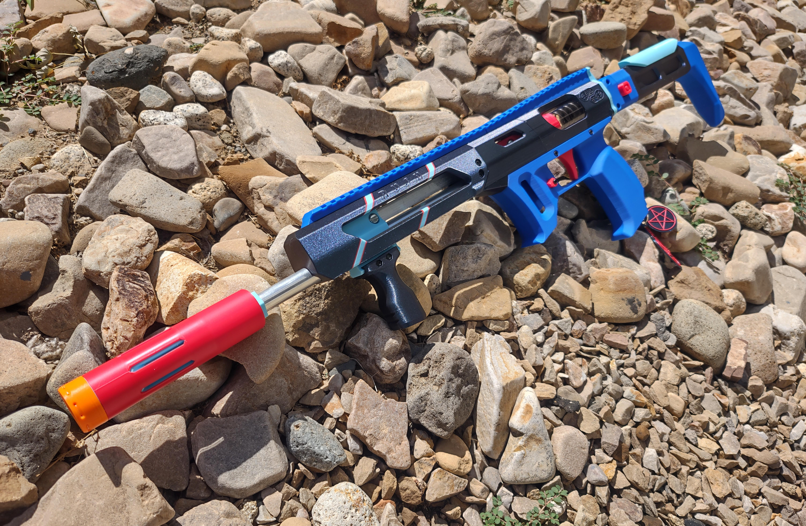
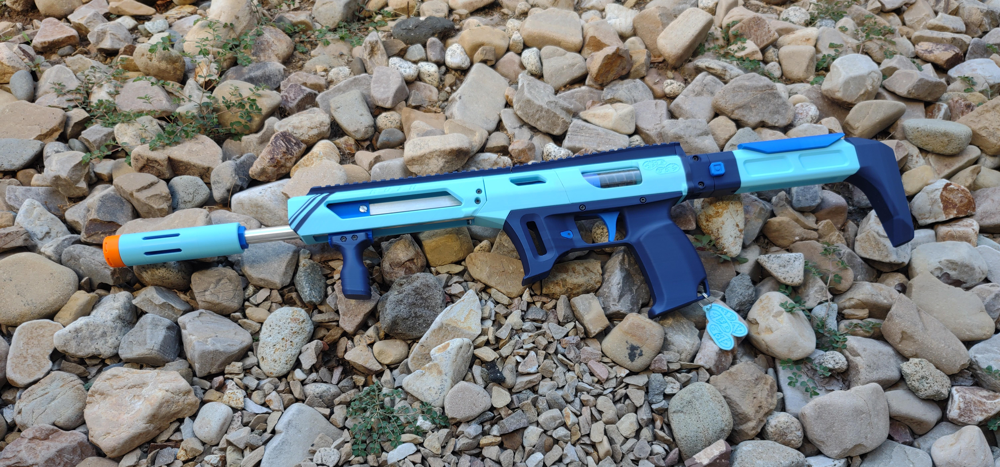

Overview
Rush came into being initially as an experimental blaster. I had an idea for a single bar, single piece "ram" assembly for a pump action magazine fed blaster. Typically, two prime bars are used- one on either side of the magazine, attached to a ram base, which has a central pusher to chamber darts. I thought that a centrally placed vertical flat bar would both cut down hardware requirements for the blaster and support a strong 3D printed single piece ram. So, I drew up the ram- and realized I needed a blaster to try it in.
So after two days of design, Rush was born! I don't typically use "tactical" styled blasters, so I thought this was a fun opportunity to try something sleek and new. I learned many new techniques for this blaster that I've applied to projects since- most notably, this blaster uses dovetails to join the lower to the upper assembly, as well as to join the picatinny rail to the upper. This means that the blaster doesn't actually need much hardware to stay together, and parts are easily swappable for different options.
That swappable quality is what's made Rush popular. Several other designers asked for access to the files before release, as they wanted to do aesthetic remixes- and we've ended up with a huge ecosystem for the blaster. I designed it for angled talons, and before it was even fully released we had Nightingale magazine versions, Diana magazine versions, and of course straight Talon magazine versions. There are remixes for different barrel shrouds; remixes for different grips; remixes for linear rail and rod guides. Rush has become my testbed for new technology- I custom built a version with linear rod and bearing guided prime for a younger local Nerfer who struggled to use pump action hobby blasters, and I used Rush to test double stack double feed magazines by MisplacedMoose.
The single bar ram design has influenced near all of my spring-powered blasters since, as well as the dovetail construction. The blaster is light, handy, easy to build, and capable of hitting up to 220 FPS comfortably.
It's named Rush for several reasons- the first, because I designed it in two days. Second, because I envisioned it used rushing critical points (hence why there is a picatinny rail stock point instead of an integrated one- I wanted it capable of being small for running and tucking). Third- because I like the Canadian prog rock trio Rush.
And, speaking of the quick design cycle... I worked with Foamdemic, FoxfireIndustries, 3DBlastedHawaii, and BearsWares to have Rush kits and builds in stores within two weeks of its initial concept. It's also now available from 1000Screws in Canada, where I'm told Rush is quite popular!